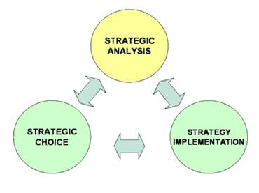

ARM402 :: Lecture 16 :: BUSINESS STRATEGY - CONCEPT - LONG TERM AND SHORT TERM FOCUS

Strategy - what is strategy?
Johnson and Scholes define strategy as follows:
"Strategy is the direction and scope of an organisation over the long-term: which achieves advantage for the organisation through its configuration of resources within a challenging environment, to meet the needs of markets and to fulfill stakeholder expectations".
In other words, strategy is about:
- Where is the business trying to get to in the long-term (direction)
- Which markets should a business compete in and what kinds of activities are involved in such markets? (markets; scope)
- How can the business perform better than the competition in those markets? (Advantage)?
- What resources (skills, assets, finance, relationships, technical competence, facilities) are required in order to be able to compete? (resources)?
- What external environmental factors affect the businesses' ability to compete? (environment)?
- What are the values and expectations of those who have power in and around the business? (stakeholders)
Strategy at Different Levels of a Business
Strategies exist at several levels in any organization - ranging from the overall business (or group of businesses) through to individuals working in it.
Corporate Strategy - is concerned with the overall purpose and scope of the business to meet stakeholder expectations. This is a crucial level since it is heavily influenced by investors in the business and acts to guide strategic decision-making throughout the business. Corporate strategy is often stated explicitly in a "mission statement".
Business Unit Strategy - is concerned more with how a business competes successfully in a particular market. It concerns strategic decisions about choice of products, meeting needs of customers, gaining advantage over competitors, exploiting or creating new opportunities etc.
Operational Strategy - is concerned with how each part of the business is organised to deliver the corporate and business-unit level strategic direction. Operational strategy therefore focuses on issues of resources, processes, people etc.
How Strategy is Managed - Strategic Management
In its broadest sense, strategic management is about taking "strategic decisions" - decisions that answer the questions above. In practice, a thorough strategic management process has three main components, shown in the figure below:

Strategic Analysis
This is all about the analyzing the strength of businesses' position and understanding the important external factors that may influence that position. The process of Strategic Analysis can be assisted by a number of tools, including:
PEST Analysis - a technique for understanding the "environment" in which a business operates |
Scenario Planning - a technique that builds various plausible views of possible futures for a business |
Five Forces Analysis - a technique for identifying the forces which affect the level of competition in an industry |
Market Segmentation - a technique which seeks to identify similarities and differences between groups of customers or users |
Directional Policy Matrix - a technique which summarizes the competitive strength of a businesses operations in specific markets |
Competitor Analysis - a wide range of techniques and analysis that seeks to summarize a businesses' overall competitive position |
Critical Success Factor Analysis - a technique to identify those areas in which a business must outperform the competition in order to succeed |
SWOT Analysis - a useful summary technique for summarising the key issues arising from an assessment of a businesses "internal" position and "external" environmental influences. |
Strategic Choice
This process involves understanding the nature of stakeholder expectations (the "ground rules"), identifying strategic options, and then evaluating and selecting strategic options.
Strategy Implementation
Often the hardest part. When a strategy has been analyzed and selected, the task is then to translate it into organizational action.
A global industry
A global industry can be defined as:
- An industry in which firms must compete in all world markets of that product in order to survive
- An industry in which a firm’s competitive advantage depends on economies of scale and economies of scope gained across markets
Global markets are international markets where products are largely standardized.
Michael Porter argued that industries are either multi-domestic or global.
Global industries: competition is global. The same firms compete with each other everywhere.
Multi-domestic industries: firms compete in each national market independently of other national markets.
In general businesses adopt a global strategy in global markets and a multi-local strategy in multi domestic markets.
Global strategy
Companies such as Sony and Panasonic pursue a global strategy which involves:
- Competing everywhere
- Appreciating that success demands a presence in almost every part of the world in order to compete effectively
- Making the product the same for each market
- Centralized control
- Taking advantage of customer needs and wants across international borders
- Locating their value adding activities where they can achieve the greatest competitive advantage
- Integrating and co-coordinating activities across borders
- A global strategy is effective when differences between countries are small and competition is global. It has advantages in terms of
Economies of scale
Lower costs
Co-ordination of activities
Faster product development
However, many regret the growing standardization across the world.
Multi domestic strategy
- A multi-domestic strategy involves products tailored to individual countries
Innovation comes from local R&D - There is decentralization of decision making with in the organization
- One result of decentralization is local sourcing
- Responding to local needs is desirable but there are disadvantages: for example high costs due to tailored products and duplication across countries
Comparison of the two strategies
Four drivers determine the extent and nature of globalization in an industry:
(1) Market drivers
- Degree of homogeneity of customer needs
- Existence of global distribution networks
- Transferable marketing
(2) Cost drivers
- Potential for economies of scale
- Transportation cost
- Product development costs
- Economies of scope
(3) Government drivers
- Favor trade policies e.g. market liberalization
- Compatible technical standards and common marketing regulations
- Privatization
.
(4) Competitive drivers
- The greater the strength of the competitive drivers the greater the tendency for an industry to globalize
| Download this lecture as PDF here |